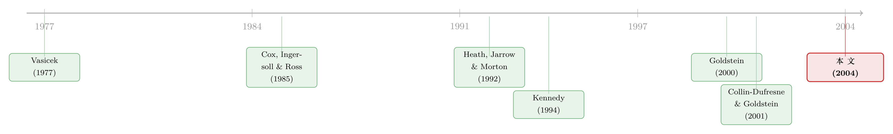

既要贴合今天，又要会呼吸：把利率波动率藏进看不见的潜变量
本文读的是 Kimmel (2004, Journal of Financial Economics)：利率期限结构建模一直被一个「不可能三角」困住——既要无需重新校准地贴合今天的收益率曲线，又要有随状态变化的条件波动率，还要让每条远期利率保持成一个低维扩散、好估计好定价。Kimmel 的办法是把波动率写成一组看不见的潜变量的函数（而不是收益率曲线本身的函数），于是三个目标第一次被同时收进了一个无套利的随机场框架里。一个副产品是：零息债券撑不满整个市场，利率衍生品的波动率风险无法靠债券对冲掉。
1 一个让所有利率模型都「按下葫芦浮起瓢」的难题
先把利率建模这件事拆成三个我们都想要、但很难一起得到的东西。
第一，贴合今天的曲线。 你手上有今天的整条收益率曲线，一个能用的模型至少得跟它对得上——否则连一张报价单都解释不了。
第二，会呼吸的波动率。 利率的波动不是个常数。利率高的时候抖得厉害，利率低的时候相对平静，这是 Chan et al. (1992) 早就摆在桌面上的经验事实。一个好模型应当有条件波动率 (conditional volatility)，即波动率会随市场状态变化。
第三，算得动。 你最终要拿这个模型去估参数、去给期权定价。如果每一条远期利率都是一个无穷维过程，那这两件事基本就别想做了。我们希望每条远期利率本身是一个低维扩散 (low-dimensional diffusion)，状态少、能写微分方程、能数值求解。
听上去都很合理。可问题在于，过去三十年的利率模型，几乎没有一个能把这三样同时拿到手。
首先是传统模型。Vasicek (1977)、Cox, Ingersoll and Ross (1985, 下称 CIR) 这一类，把瞬时利率写成一小撮状态变量的函数，状态变量服从一个时间齐次的马尔可夫扩散。它们有第二和第三——既有条件波动率（CIR 里波动率正比于 \(\sqrt{r}\)），又是低维的、解析性极好。但它们做不到第一：模型生成的债券价格，一般对不上今天市场上真实的债券价格。
为了补上第一，于是有了所谓无套利模型 (arbitrage-free models)，比如 Ho and Lee (1986)、Black, Derman and Toy (1990)。它们的做法很直接：往模型里塞进显式随时间变化的参数，硬把今天的债券价格拟合上。Heath, Jarrow and Morton (1992, 下称 HJM) 则换了个路子，让状态变量服从一个非马尔可夫过程来匹配价格。
听起来问题解决了？接着，一个自然的问题是：这些「看起来恒定、实则要不停手动调」的参数，代价是什么？
代价是重新校准 (recalibration)。这些模型与期限结构的时间序列行为并不自洽——按它们的设定，根本不存在哪一串创新（innovation）能同时解释连续好几期的期限结构观测。于是从业者只能隔三差五把「号称恒定」的参数重新调一遍来迁就当下行情。而每一次重新校准，本身就是一个模型假装不存在、却真实存在的隐藏风险源。
2 随机场：用「无穷多个因子」换来一条免校准的曲线
真正关键的一步，来自一个反直觉的转向：既然几个因子总也凑不齐，那就干脆给每条债券各发一个自己的随机源。
这就是 Kennedy (1994) 开创的随机场 (random field)（也叫随机弦，stochastic string）模型。债券价格是一个连续统——按到期日 \(T\) 连续地排开——所以这类模型由无穷多个创新源驱动。它和无套利模型恰好是镜像：无套利模型是「几个状态变量 + 一大堆参数」，随机场模型是「一个连续统的状态变量（所有期限的远期利率）+ 通常只有寥寥几个参数」。
为什么这反而是好事？因为只要给所有期限的协方差结构指定一个光滑函数，模型就平凡地贴合了今天的整条曲线——今天的曲线本来就是模型的初始条件，不需要时变参数，也不需要重新校准。第一，到手了。
更妙的是第三也没丢。Kennedy 证明：虽然整条期限结构被无穷个因子驱动，每一条单独的远期利率却仍然服从一个标量扩散。技术上靠的是一张二维布朗单 (Brownian sheet) \(W_{s,t}\) ——它是一张在 \(s\)、\(t\) 两个方向上都连续的随机曲面，满足
$$E[W_{s,t}] = 0, \qquad \mathrm{Cov}[W_{s_1,t_1},\, W_{s_2,t_2}] = (s_1\wedge s_2)(t_1\wedge t_2),$$
并且对任意固定的 \(s\) 可以看成一个被缩放的布朗运动 \(W_{s,t} = \sqrt{s}\,B_{s,t}\)。Kennedy (1997) 用它构造出协方差为
$$\mathrm{Cov}[df_t(T_1),\, df_t(T_2)] = \sigma^2 e^{-k(T_1-t)-k(T_2-t)-\rho|T_1-T_2|}\,dt$$
的远期利率场——只有三个参数 \(\sigma, k, \rho\)，却让每条远期利率都各有独立创新，且各自是标量扩散。Kennedy (1994) 甚至能就此推出零息债券期权的闭式解。
随机场还顺手治好了另一个老毛病。正如 Goldstein (2000) 指出的，三因子模型有个荒唐的含义：一张 30 年期债券竟然可以被 1 个月、2 个月、3 个月的短券完美对冲。随机场的无穷维结构天然避开了这种荒诞。
（把利率曲线拆成几个有经济含义的「人」、再讨论它们能不能匹配真实曲线动态，可参见《把利率曲线拆成三个人：稳态、习惯、与期待》。）
那么，三个目标里，随机场拿到了第一和第三。
然后，问题又回来了：第二呢？
3 加上「会呼吸」，却弄丢了「算得动」
Kennedy 的模型没有条件波动率。看那条协方差公式：方差和相关性全是到期期限的确定性函数，与利率水平、与市场状态无关。这跟「利率高时波动大」的经验事实是冲突的。
于是 Goldstein (2000) 站出来做第二步：他构造了一大类带条件波动率的随机场模型，并推导了使其无套利所需的限制条件。一个自然的做法，是让协方差变成某些基准收益率（比如瞬时利率）的函数。
但真正棘手的一步在于：一旦你让波动率依赖于收益率曲线本身，第三就崩了。
为什么？看 Kimmel 给的反例（论文 Eq. (21)）。假设远期利率的波动率依赖瞬时利率 \(r_t\)，而瞬时利率被定义为最短端的那条远期利率：
$$df_t(T) = m(r_t, T-t)\,dt + \int_{s=0}^{+\infty}\sigma(r_t, T-t, s)\,dW_{s,t}, \qquad r_t = f_t(t).$$
麻烦就出在 \(r_t = f_t(t)\) 这一笔。瞬时利率在每一瞬间都换成了另一条远期利率的身份（到期日永远「贴着」当下）。于是 \(r_t\) 自身服从一个复杂的、可能是无穷维的过程；而既然每条远期利率的波动率又都挂在 \(r_t\) 上，整个远期利率场也被拖进了无穷维。
后果有两层。其一，定价和估计变得几乎不可做——第六节那套低维定价方法对这类模型完全失效。其二，更根本：你甚至说不清这样一个过程到底存不存在。Goldstein (2000) 这类工作通常是「假设解存在，再在此前提下推无套利条件」，但保证远期利率过程存在所需的限制，一直没人推出来。
所以局面是这样的：
- 传统模型（Vasicek / CIR）：有②③，缺①；
- 随机场（Kennedy）：有①③，缺②；
- 带条件波动率的随机场（Goldstein）：有①②，缺③。
按下葫芦浮起瓢。Kimmel 这篇论文，就是要把第三个浮起来的瓢，按回去。
4 反转：把波动率挂在「看不见的」潜变量上
Kimmel 的核心想法，一句话就能说清，但要细想才知道有多妙：
别让波动率依赖你看得见的收益率曲线，让它依赖一组你看不见的潜变量。
具体地，他让协方差曲面成为一组有限个潜变量 (latent variables) \(X_t\) 的函数，而这组潜变量本身服从一个联合扩散过程。之所以叫「潜」，是因为一般而言，你无法从某一时点债券价格或远期利率的横截面里反推出它们的取值——它们扮演的角色，正类似股票期权里的随机波动率（和随机风险溢价）。
这就是他命名的潜变量期限结构模型 (latent variable term structure model, LV)。一个含 \(N\) 个潜变量的模型记作 LV-\(N\)（允许 \(N=0\)），由两组状态变量刻画：所有期限的瞬时远期利率，以及这 \(N\) 个潜变量。论文用五条公理 LV-1 至 LV-5 来定义它，其中两条是骨架：
潜变量自己走一个普通扩散（LV-2）：
$$dX_t = m_X(X_t)\,dt + s_X(X_t)\,dZ_t,$$
其中 \(Z_t\) 是 \(N\) 维标准布朗运动。
而每一条远期利率（LV-3）满足下面这个随机微分方程——这是整篇论文的中心方程：
现在请盯住这个方程的右边，关键就藏在这里：漂移 \(m_f\) 和扩散系数 \(s_{fZ}, s_{fW}\)，只依赖潜变量 \(X_t\) 和到期距离 \(T-t\)。 \(f\) 本身、收益率曲线的水平与形状，都不出现在右边。
这一笔的回报是巨大的。把瞬时方差、协方差从 Eq. (7)、(8) 中读出来，定义辅助函数
$$c_{WW}(X_t, T_1-t, T_2-t) = \int_0^{+\infty} s_{fW}(X_t, T_1-t, s)\, s_{fW}(X_t, T_2-t, s)\,ds,$$
就得到三组协方差：
$$\mathrm{Var}[dX_t] = s_X(X_t)\,s_X^\top(X_t)\,dt,$$ $$\mathrm{Cov}[dX_t,\, df_t(T)] = s_X(X_t)\,s_{fZ}(X_t, T-t)\,dt,$$ $$\mathrm{Cov}[df_t(T_1),\, df_t(T_2)] = \big[\,s_{fZ}^\top(X_t, T_1-t)\,s_{fZ}(X_t, T_2-t) + c_{WW}(X_t, T_1-t, T_2-t)\,\big]\,dt.$$
任意两条远期利率的协方差，只依赖到期期限和潜变量 \(X_t\)。波动率因此是「会呼吸」的（随 \(X_t\) 变化），第二，到手了；可它呼吸的节拍是潜变量而不是收益率曲线，于是任何有限组远期利率连同 \(X_t\) 一起，仍然构成一个联合扩散——第三，也保住了。
这就是这篇论文的全部魔法所在：把波动率的状态变量，从「可观测的曲线」换成「不可观测的潜变量」，三难选择被一举打通。一旦潜变量过程定好，远期利率就只是把右边那些积分算出来的事；存在性、唯一性、无套利，都退化成基本是技术性的正则条件（LV-3 至 LV-5 的可积性约束加上两条 Novikov 型条件 Eq. (14)、(15)）。
值得一提的是，模型的语言是远期利率而非收益率。收益率 \(y_t(T)\) 的漂移会牵扯进瞬时利率 \(r_t\)，从而继承那份无穷维的复杂性（Eq. (32)）；但只要把估计和定价问题都改写成远期利率的语言，难题就绕开了。这也是为什么 Kimmel (2001) 在实证里是对远期利率用矩方法估计 LV 模型。
（波动率到底「藏」在收益率曲线的哪里、能不能被曲线本身识别出来，是这条线上一个反复出现的争论，可参见《波动率到底藏在哪里？——一篇被「换了把尺子」就翻案的利率期限结构论文》与《收益率曲线拟合得再好，也可能对波动率「充耳不闻」》。）
5 无套利的「价」：债券撑不满市场
把模型搭好之后，还有一道必须交代的关卡——无套利从何而来。
LV-4 给出了漂移 \(m_f\) 必须满足的形式（Eq. (11)）。它由四块拼成：前两块是凸性调整 (convexity adjustment)，源于债券价格与远期利率之间的非线性关系；后两块才是真正的风险溢价——分别对应两类创新 \(Z_t\) 和 \(W_{s,t}\)，由市场价格函数 \(\lambda_Z(X_t)\) 和 \(\lambda_W(X_t, s)\) 标价。把它放进债券价格动态（Eq. (36)），债券的瞬时（比例）漂移恰好是「瞬时利率 \(r_t\) + 两类风险溢价」——这正是一个无套利模型该有的样子。LV-5 的两条条件则保证等价鞅测度存在、且债券价格在该测度下确实是鞅。
但这里冒出一个意味深长的反转。
注意 Eq. (8) 里那张布朗单：每一条远期利率都有一份只属于自己的创新源 \(W_{s,t}\)。这意味着，零息债券的集合不一定能撑满 (complete) 整个市场。换句话说，衍生品身上的波动率风险，可能只能用其他衍生品来对冲，而无法用债券对冲掉。
这个性质在股票等资产的随机波动率模型里司空见惯，但在利率期限结构模型里却相当罕见——它正是后来被称作未被张成的随机波动率 (unspanned stochastic volatility, USV) 的现象，与 Collin-Dufresne and Goldstein (2001) 「债券能否张成固定收益市场」的追问是同一回事。它的实务含义很硬：利率衍生品并不总能由无套利定价，因为你手里的债券组合，根本复制不出它的波动率敞口。
（关于波动率风险无法被对冲、从而衍生品市场自己给波动率定价的逻辑，固定收益之外的一个对照，可参见《恐慌指数也能定价：当 2008 把所有「均值回归」模型一起按在地上摩擦》。）
6 更好用的一档：仿射潜变量模型
为了让模型真能落地，Kimmel 在第四节专门划出一个解析性最好的子类——仿射潜变量模型 (affine latent variable model, ALV)，让潜变量服从仿射扩散。仿射结构的好处是已经被 Duffie and Kan (1996)、Dai and Singleton (2000) 这条「仿射期限结构」主线打磨得很透：存在唯一性条件可以被完全刻画，矩、特征函数、债券价格都有闭式或半闭式表达。Kimmel 进一步讨论了 ALV 模型与传统仿射收益率模型之间的关系——某种意义上，ALV 是把仿射这套好用的代数，嫁接到随机场的「免校准 + 各期限独立创新」骨架上。
到第六节，回报终于兑现：即便整条期限结构由无穷多个因子驱动，欧式利率衍生品仍然满足一个简单的、低维的偏微分方程。这正是第四节那个「每条远期利率都是低维扩散」性质，在定价层面收的果。
7 文献脉络
把这条线捋直，故事其实很清楚。
最早是均衡/传统模型：Vasicek (1977) 给出期限结构的均衡刻画，CIR（Cox, Ingersoll and Ross, 1985）把它做成带 \(\sqrt{r}\) 波动率的经典扩散。它们解析优美，却拟合不了真实曲线。
为了拟合曲线，无套利路线登场：Ho and Lee (1986)、Black, Derman and Toy (1990) 用时变参数硬贴，HJM（Heath, Jarrow and Morton, 1992）用非马尔可夫的远期利率动态匹配价格——代价是反复重新校准。
随后是随机场的转向：Kennedy (1994, 1997) 用高斯随机场让每条债券各有创新，免校准、且各期限仍是标量扩散，但没有条件波动率。Goldstein (2000) 补上条件波动率，却让远期利率掉进无穷维。这条裂缝，正是 Kimmel (2004) 用「潜变量」填上的位置。而它顺带带出的市场不完备性，又与 Collin-Dufresne and Goldstein (2001) 的 USV 讨论合流。

评论与延伸（Q&A + 研究方向）
(a) 几个可能的疑问
Q：潜变量到底是什么？是不是换了个名字的「随机波动率」？
本质上就是。它扮演的角色与股票期权里的随机波动率（外加随机风险溢价）完全类比。关键差别在「位置」：传统做法把波动率挂在可观测的利率水平上，导致瞬时利率每瞬间换身份、过程变无穷维；Kimmel 把它挂在一组不可从横截面反推的潜变量上，于是远期利率的漂移和扩散系数只依赖 \(X_t\) 和 \(T-t\)，每条远期利率因此重新成为低维扩散。
Q：既然潜变量看不见，模型还能估计吗？
能。看不见不等于估不出——这跟随机波动率模型一个道理，可以用滤波、矩方法或特征函数方法把潜变量过程的参数估出来。Kimmel (2001) 就是对远期利率用矩方法估了若干 LV 模型。注意要用远期利率而非收益率来写矩条件，因为收益率的漂移会牵进瞬时利率那份无穷维复杂性。
Q：为什么非得用远期利率，不能直接用收益率？
因为远期利率享有「扩散性质」——它的演化只依赖潜变量；而收益率的漂移里含 \(-r_t + m_F\)，瞬时利率 \(r_t = f_t(t)\) 每瞬间换身份，使收益率继承了潜在的无穷维过程（Eq. (32)）。所以估计与定价都尽量改写成远期利率的语言，难题就被绕开。
Q：「零息债券撑不满市场」这件事，有多反常？
在股票的随机波动率世界里一点都不反常——波动率风险本就常常对冲不掉。但在利率模型里相当罕见，它等价于说利率衍生品不总能由无套利定价，波动率敞口只能用别的衍生品去对冲。这正是后来 USV 文献（Collin-Dufresne and Goldstein, 2001）的核心命题。
Q：和传统仿射模型（如 Dai-Singleton）到底什么关系？
ALV 子类把仿射这套成熟代数装进随机场骨架。差别在于：纯仿射模型用少数因子 + 多参数，一般需要重新校准；ALV 保留了随机场「初始曲线即输入、各期限独立创新、无需重校」的优点，同时又借仿射结构拿回了存在唯一性的完整刻画与解析定价。
Q：这个模型解决了 Goldstein (2000) 的「存在性」难题吗？
大体上是。一旦潜变量过程被合法地设定好，LV-3 至 LV-5 里那些可积性与 Novikov 型条件就基本是技术性正则条件，远期利率过程的存在唯一性和无套利可以被干净地建立——这恰是 Goldstein 那类「假设存在再证无套利」的工作所缺的一环。
(b) 几个可能的研究问题与提案
1. 把 LV/USV 框架搬到公司债与信用利差。 【经济故事】信用利差里同样存在「撑不满市场」的风险——违约强度的波动率、流动性状态，未必能用现券组合对冲。把潜变量当作信用波动率/流动性状态，能否解释信用衍生品（CDS 期权）相对现券的「不可对冲」溢价？ 【可行性】中。需要 CDS、CDS 期权与现券的联合数据（Markit + TRACE），识别上可借 USV 的检验思路（用衍生品残差是否被现券张成来判定）。数据可得但 CDS 期权样本较薄。
2. 用利率衍生品直接检验「债券撑不满市场」。 【经济故事】Kimmel 的模型预测利率衍生品有债券对冲不掉的波动率风险。能否用 cap/floor、swaption 的对冲残差，量化这部分「未被张成」的方差占比，并看它在危机期如何放大？ 【可行性】高。swaption 隐含波动率与 LIBOR/swap 曲线数据成熟，USV 检验方法（Collin-Dufresne–Goldstein）现成，是相对 doable 的实证。
3. 潜变量到底「是」什么宏观状态？ 【经济故事】模型说波动率随看不见的 \(X_t\) 呼吸，但没说 \(X_t\) 对应什么。把估出来的潜变量与货币政策不确定性、流动性指标、宏观波动率做投影，看能否赋予它经济含义。 【可行性】中。先估 ALV 得到滤波后的 \(X_t\) 路径，再做解释性回归；难点是潜变量识别本身不唯一，经济解释易流于事后叙事。
4. 外资持有结构与利率波动率的「潜变量」。 【经济故事】国债的边际持有人（外资央行 vs. 杠杆基金）变化，可能正是驱动条件波动率却不写在曲线水平上的那类「潜」状态。把持有人结构作为潜变量的代理，检验它是否预测对冲残差里的波动率风险。 【可行性】中偏低。需要 TIC/持有人层面的高频数据与利率衍生品对接，识别外生性较难，但方向新颖。
参考文献
- Black, F., Derman, E., Toy, W. (1990). A one-factor model of interest rates and its application to treasury bond options. Financial Analysts Journal 46, 33–39.
- Chan, K.C., Karolyi, G.A., Longstaff, F.A., Sanders, A.B. (1992). An empirical comparison of alternative models of the short-term interest rate. Journal of Finance 48, 1209–1227.
- Collin-Dufresne, P., Goldstein, R. (2001). Do bonds span fixed income markets? Theory and evidence for unspanned stochastic volatility. Unpublished working paper.
- Cox, J.C., Ingersoll, J.E., Ross, S.A. (1985). A theory of the term structure of interest rates. Econometrica 53, 385–408.
- Dai, Q., Singleton, K.J. (2000). Specification analysis of affine term structure models. Journal of Finance 55, 1943–1978.
- Duffie, D., Kan, R. (1996). A yield-factor model of interest rates. Mathematical Finance 6, 379–406.
- Goldstein, R. (2000). The term structure of interest rates as a random field. Review of Financial Studies 13, 365–384.
- Heath, D., Jarrow, R., Morton, A. (1992). Bond pricing and the term structure of interest rates: a new methodology for contingent claims valuation. Econometrica 60, 77–105.
- Ho, T., Lee, S. (1986). Term structure movements and pricing interest rate contingent claims. Journal of Finance 41, 1011–1029.
- Kennedy, D. (1994). The term structure of interest rates as a Gaussian random field. Mathematical Finance 4, 247–258.
- Kennedy, D. (1997). Characterizing Gaussian models of the term structure of interest rates. Mathematical Finance 7, 107–118.
- Kimmel, R.L. (2004). Modeling the term structure of interest rates: A new approach. Journal of Financial Economics 72(1), 143–183.
- Vasicek, O. (1977). An equilibrium characterization of the term structure. Journal of Financial Economics 5, 177–188.